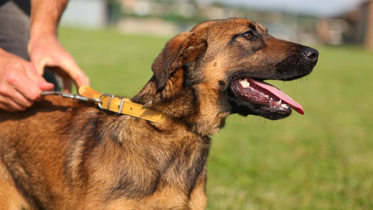

Huiszoeking
Ga aan de slag met de drugshond en zoek alle drugs!

In het lokaal zitten overal zakjes drugs verstopt. Om de drugs te vinden moet er gezocht worden met behulp van een drugshond die blaft als het drugs ruikt. Dit wordt geïmplementeerd met een BLE scan, die ingebouwd zit in de neus van de knuffelbeer. Ieder zakje drugs bevat dus een beacon/ESP32. Eens de hond blaft bij een zakje drugs, wordt gekeken bij de scanner of het wel degelijk drugs is. Door de NFC-tag uit het zakje drugs te scannen en vervolgens op de weegschaal te leggen, is een deel van de opdracht geslaagd! Eens alle drugs is gevonden en het gewicht op de weegschaal correct is, is het spel gedaan en zijn de spelers gewonnen.
Benodigdheden
- ESP32 voor iedere zakje drugs en hond + battery packs
- ESP32 voor weegschaal en scanner
- NFC-reader en tags
- Gewichtssensor
- Speaker